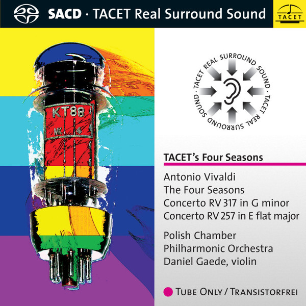

SACD
The Four Seasons / Concerto Op. 12 No 1 RV 317 in G minor / Concerto RV 257 In E Flat Major
Antonio Vivaldi / Polska Filharmonia Kameralna, Daniel Gaede
Media: NM · Sleeve: NM
CA$58.50
Discogs SuggestedCA$65.12
Discogs MedianCA$65.12
Discogs HighCA$65.12
- Physical Copy ID
- BB-SACD-012
- Year
- 2008
- Label
- Tacet
- Catalog #
- TACET S 163
- Country
- DEGermany
- Genre / Style
- Classical · Baroque